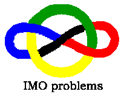

|  |
The IMO got noticeably harder in the late 1980s. There are two separate papers of 3 problems each. The idea is that in each paper the problems are in order of increasing difficulty. That is not always true. But in the last 10 years the last problem in the second paper has usually been hard.
Many thanks to all those who supplied solutions where I failed, or pointed out errors, or supplied better solutions. There are still some solutions which are clumsy or inelegant, and maybe even some which are wrong (although I am not aware of any). All suggestions for improvement would be most welcome. [email: jscholes@kalva.demon.co.uk]
There are some technical notes on formats etc below.
Changing the archive material will take time. Whenever I update a page, I also remove the "paper" speckled background, which has now begun to aggravate me!
I am also switching from providing .pdf files to providing .tex files, which are smaller.
Home
John Scholes
jscholes@kalva.demon.co.uk
14 Jul 2003
Last corrected/updated 4 Nov 03